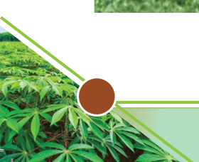
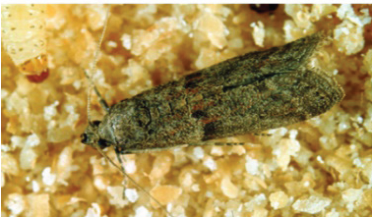
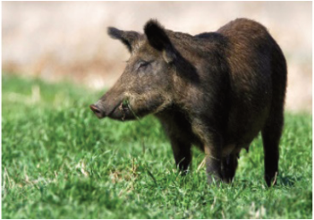
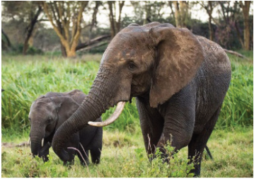
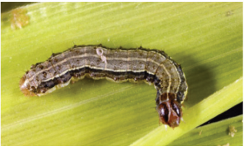
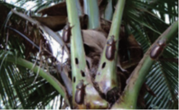
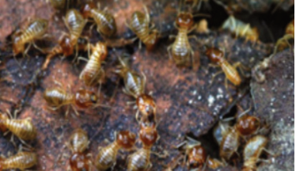
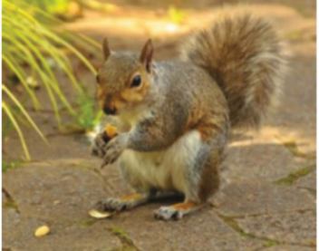

Figure 1.3 (a)

Figure 1.3 (b)

Figure 1.3 (c)

Figure 1.3 (d)

Figure 1.3 (e)

Figure 1.3 (f)

Figure 1.3 (g)

Figure 1.3 (h)









Agriculture for Secondary Schools

Figure 1.3 (a)
Figure 1.3 (b)

Figure 1.3 (c)

Figure 1.3 (d)

Figure 1.3 (e)
Figure 1.3 (f)
Figure 1.3 (g)
Figure 1.3 (h)
14
Student’s Book Form Two